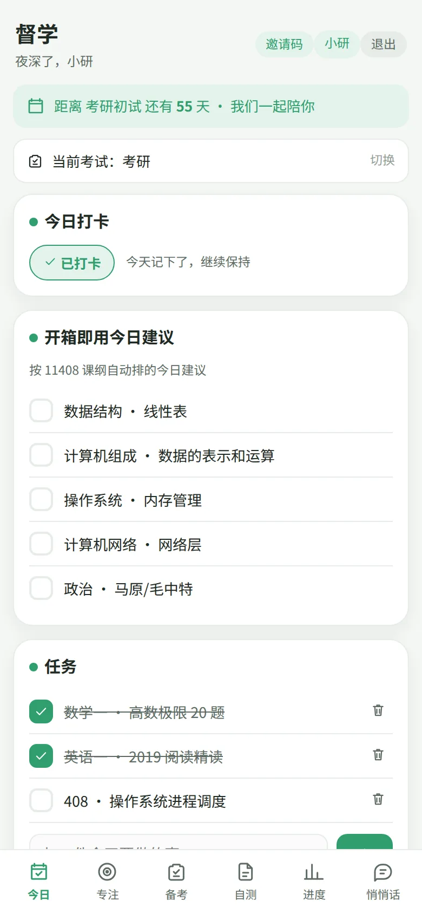
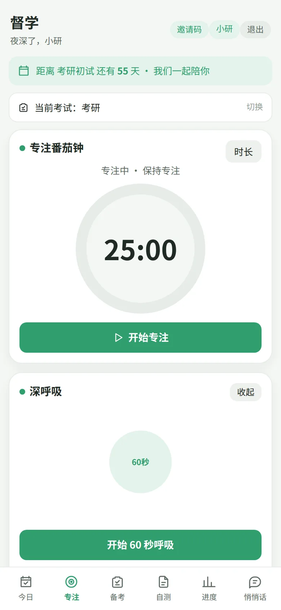
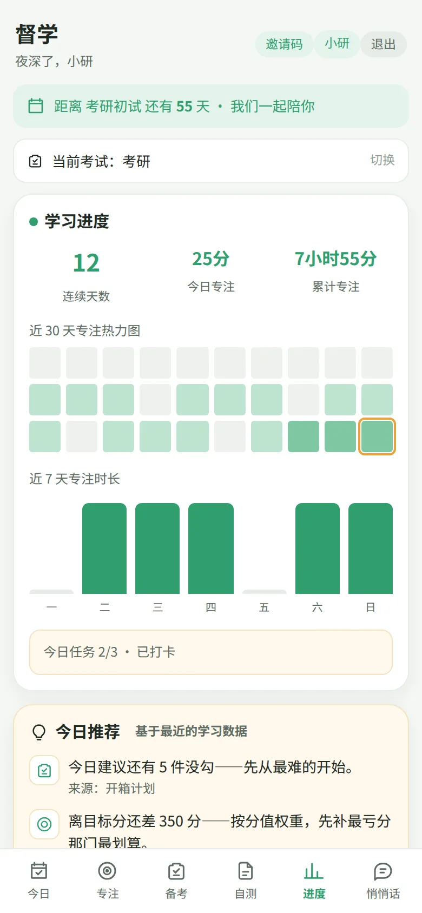
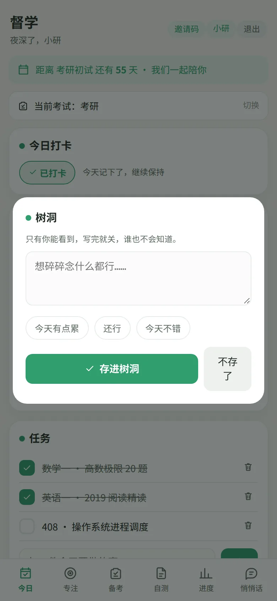
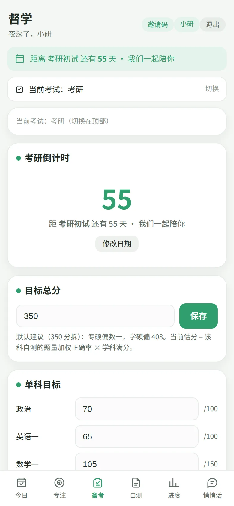

先护情绪，再谈分数
倒计时措辞从“紧迫”转“陪伴”，可以收起；树洞与 60 秒呼吸兜底。为提升分数而加重焦虑的改动，一票否决。
考研长线陪伴 · 本地优先
按 11408 课纲自动排好今天该做的 3 件事；番茄钟、情绪兜底、和在乎的人互写一句话。打开就能用，数据默认留在你自己的手机里。

“陪跑不监工。对方的数字默认不主动推送，想看才点开。”
为什么做它
计划写得很大：“今天看高数”。执行时无从判断做没做完，既没有进度感，也没有挫败感——第二天继续写一遍。我们把任务拆到带时长、可勾选的粒度，让完成变得可见。
倒计时措辞从“紧迫”转“陪伴”，可以收起；树洞与 60 秒呼吸兜底。为提升分数而加重焦虑的改动，一票否决。
按 11408 课纲自动排好今日建议，不用先做一份完美计划。也可以加自己的任务、一键打印。
30 天专注热力图、近 7 天柱状图、连续天数。不是评判，是让她知道“我真的在往前走”。
30 秒看看
真实录屏，不是动效稿。看一遍就知道它怎么用。
打开就有 11408 的今日建议；勾掉一件，完成率、连续天数和热力图立刻更新。晚上想说话，树洞和今日一句话都在。
能做什么
从早上打开到晚上收工，每个环节都尽量少做决定、少添焦虑。
打开就有按 11408 课纲排好的今日建议；完成一件勾一件。也可以写自己的任务，支持一键打印。
番茄钟自动累计今日专注；焦虑上来时，跟着 60 秒呼吸把人拉回来。不需要意志力爆棚，只需要开始。

30 天热力图、近 7 天柱状图、连续天数，加上今日任务完成率。不是拿来比较，是拿来确认自己真的在走。

树洞只有她自己能看到，写完就关；今日一句话两人互写，是情感锚点，不是考核。呼吸练习给情绪一个出口。

D-day 倒计时、四科阶段目标、自测正确率；按课纲轮转的周计划，让她始终知道下一步该啃哪块。

答疑、讲题、作文批改、学习规划，结合她的错题与自测。需要配置 AI 服务后使用。
督学端从“看她数据”改成“陪她”：互写一句话、送鼓励、发悄悄话。数字默认不主动推送。
PWA 加到主屏、Android App、微信小程序。手机浏览器打开就能用，无需应用商店。
一天怎么用
不用先想“学什么”，按课纲排好的建议已经在。
25 分钟只做一件事；结束后休息 5 分钟，专注时长自动累计。
看一眼今天的完成率；想说话就写今日一句话，不想说就丢进树洞。
热力图和周趋势告诉她这周走了多远；下周的计划已经按课纲轮转好。
数据在哪
本地模式不需要注册、不需要服务器：任务、专注、打卡、树洞都只存在当前浏览器。想两个人远程同步时，再配置 Supabase；权限按小组隔离，只有你们两个人能看到。
安装
现在是内测版；PWA 已经可用，Android 安装包和微信小程序还在准备中。
内测中，暂未公开下载。先用上面的 PWA 方式安装；需要测试包可以在 GitHub Issues 里说一声。
内测中，暂未公开二维码。小程序代码已在仓库里，等 AppID 和审核流程走完再上线。
常见问题
不需要。本地模式下起个昵称就能用；只有想两个人远程同步时，才需要配置 Supabase 账号。
默认不会，本地模式的数据只存在你自己的浏览器里。配置云端同步后，数据存在你自己的 Supabase 项目里，按小组隔离。清缓存会丢本地数据，重要记录请用云端或备份。
以考研 11408 为主，也支持专升本、高考、考公考编等考试类型切换；不同考试的规划模块会有所不同。
AI 名师目前是内测功能，需要配置 AI 服务后使用；它不是默认可用，也不影响今日建议、番茄钟、进度与情绪模块。
手机浏览器打开后点“添加到主屏幕”，体验等同 App；也可以使用 Android 安装包或微信小程序（内测中）。
不是。树洞、呼吸和今日一句话是日常支持工具，不能替代专业心理咨询或医疗帮助。如果情绪持续低落，请寻求专业支持。
今天先做 3 件事
不用等一个完美的开始。打开，勾掉第一件。